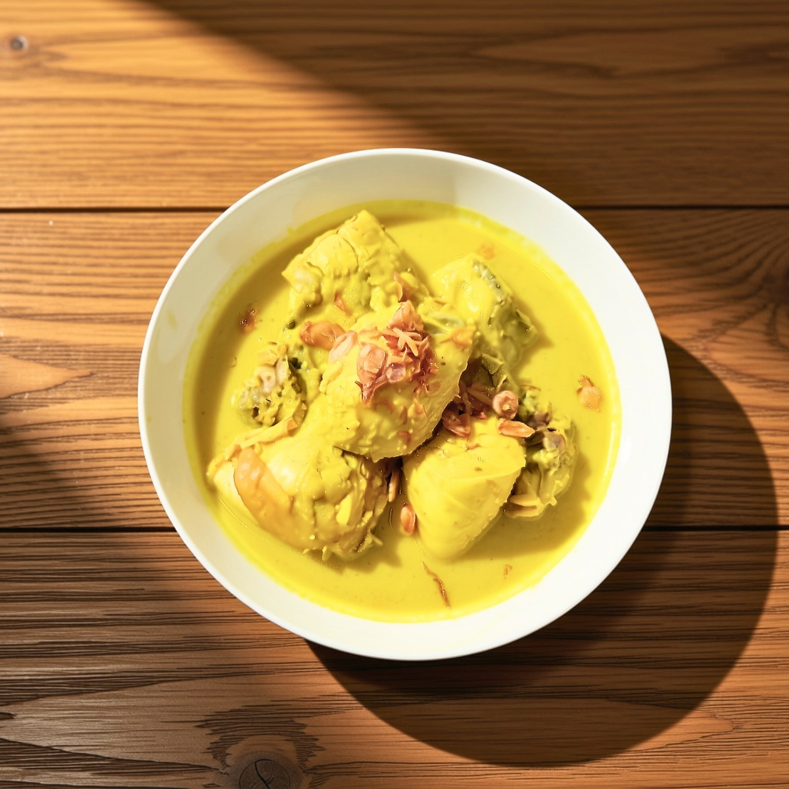
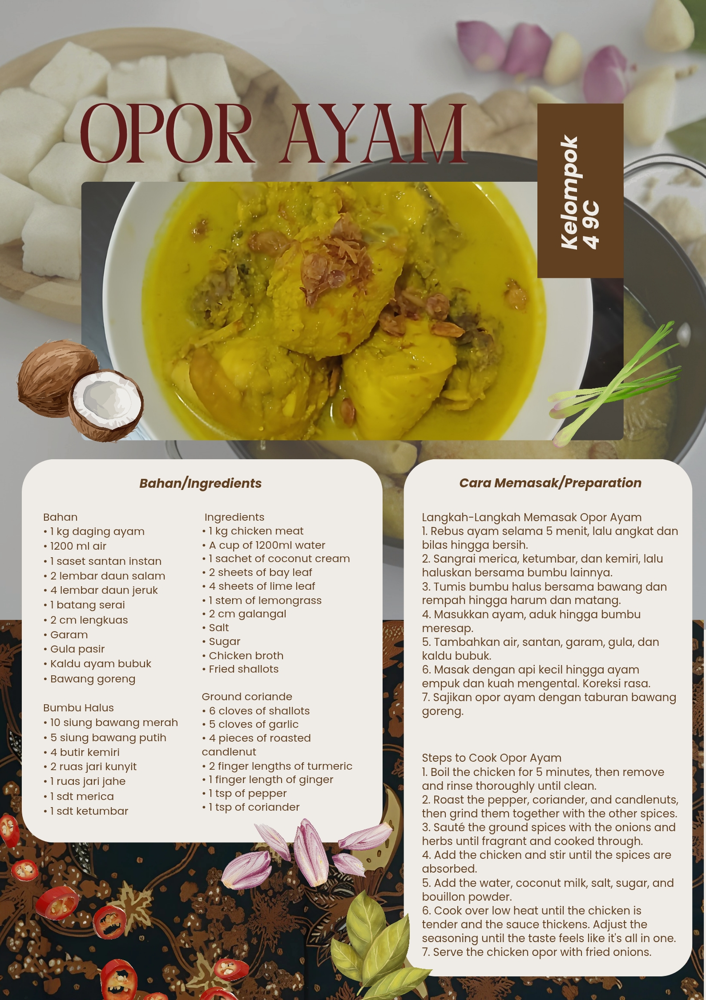
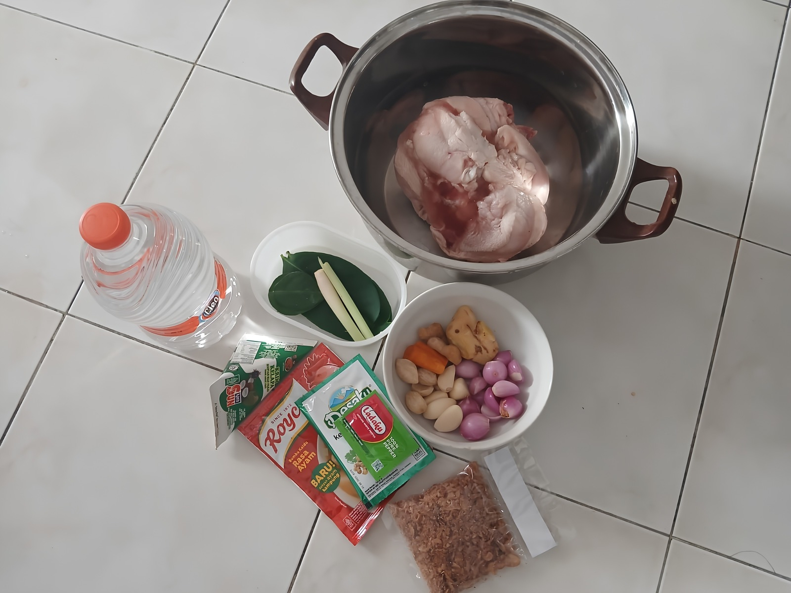

Hidangan ayam berkuah santan dengan perpaduan rempah yang menjadi bagian dari kekayaan kuliner Indonesia. Kenali sejarah, bahan, dan cara pembuatannya melalui halaman ini.
Jelajahi
Opor ayam merupakan hidangan tradisional Indonesia yang dibuat dari daging ayam dan kuah santan. Hidangan ini memiliki cita rasa gurih dengan aroma rempah seperti serai, lengkuas, kunyit, ketumbar, dan daun salam.
Opor ayam sering disajikan dalam berbagai perayaan dan kegiatan keluarga, terutama saat Idulfitri. Hidangan ini biasanya disantap bersama ketupat, lontong, atau nasi.
Resep opor ayam memiliki beragam variasi di Indonesia. Perbedaan penggunaan bumbu dan cara memasak menghasilkan karakter rasa yang khas di setiap keluarga maupun daerah.
Berikut bahan-bahan dan langkah pembuatan opor ayam.


Dokumentasi proses pembuatan opor ayam, mulai dari persiapan bahan hingga hidangan selesai dimasak.
Opor ayam menunjukkan bagaimana bahan lokal seperti santan dan rempah-rempah diolah menjadi hidangan yang dikenal luas di Indonesia. Kehadirannya dalam berbagai perayaan juga memperlihatkan hubungan antara makanan, kebiasaan keluarga, dan tradisi masyarakat. Melalui pengenalan hidangan ini, kekayaan kuliner Nusantara dapat dipahami sebagai bagian dari warisan budaya Indonesia.